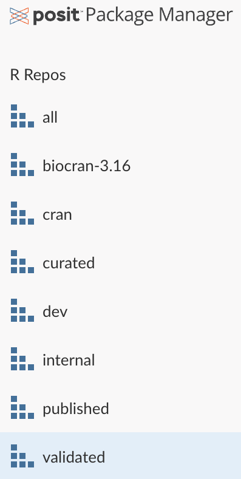

flowchart LR A(Data Collection\nCRF) --> B(Organize Data\nSDTM ) B --> C(Analysis Data Creation\nADaM) C --> D(Data Analyzed)
flowchart LR A(Data Collection\nCRF) --> B(Organize Data\nSDTM ) B --> C(Analysis Data Creation\nADaM) C --> D(Data Analyzed)
Clinical trials are conducted to assess the efficacy of various disease interventions. Before and during the study, data is collected pertaining to the study subjects (metadata) and the study outcomes using a case report form (CRF). The Clinical Data Acquisition Standards Harmonization (CDASH) Model provides recommendations for designing CRFs.
Once the data is collected, it is organized into tabular data in accordance to the Study Data Tabulation Model (SDTM). SDTM datasets can then be used for the creation of “analysis-ready” ADaM (Analytical Data Model) datasets. ADaM is one of the required standards for data submission to FDA (U.S.) and PMDA (Japan)1. ADaM datasets typically have a theme that allows for focused analyses including (but not limited to):
ADSL: Subject-Level Analysis
ADAE: Adverse Events Analysis
ADVS: Vital Signs Analysis
ADTEE: Time to Event Analysis
ADCM: Concomitant Medication Analysis
ADLB: Laboratory Analysis
The data standards and guidelines described above for CDASH, SDTM, and ADaM are set forth by the Clinical Data Interchange Consortium (CDISC).
We will use a publicly available ADSL dataset from the CDISC pilot study. This is test data and has been appropriately cleansed and de-identified for informational and research purposes.
For some data science teams, especially those working with clinical data and submitting results to regulatory agencies, the development environment must be carefully designed and tightly regulated to ensure reproducibility. This is often referred to as a validated environment. Within a validated environment, open-source packages are usually vetted to ensure they meet specific requirements before making them available to developers via a validated package repository.
With Posit Package Manager, teams can easily create their own custom package repositories, including a validated repository for clinical data analyses. In this example, we will use a validated repository hosted on Posit’s internal Posit Package Manager instance:

To install an R package from a specific R repository on Posit Package Manager, we can modify the repos argument from within the options() function:
options(repos = c(REPO_NAME = "url-to-your-validated-R-repo"))If you restart your R session, you’ll need to re-enter the above code to set your R repository. To maintain this configuration across all R sessions, you can add this command to your .Rprofile R startup file. If you’re using Posit Workbench, your administrator can set this configuration server-wide by adding this line to the .Rprofile.site file.
On the CDISC GitHub page, the ADSL data is stored as a .xpt file that is created using SAS. Fortunately, we can still read this data into R using the power of open-source data science! Here we’ll use the haven package from R to read in the adsl.xpt and save it to the variable adsl.
library(haven) # For reading SAS datasets
library(dplyr) # For data manipulation
# Read in the ADSL dataset
adsl <- read_xpt(file = "adsl.xpt", NULL)
# Take a glimpse of the data to see what it looks like
glimpse(adsl)Rows: 254
Columns: 48
$ STUDYID <chr> "CDISCPILOT01", "CDISCPILOT01", "CDISCPILOT01", "CDISCPILOT01…
$ USUBJID <chr> "01-701-1015", "01-701-1023", "01-701-1028", "01-701-1033", "…
$ SUBJID <chr> "1015", "1023", "1028", "1033", "1034", "1047", "1097", "1111…
$ SITEID <chr> "701", "701", "701", "701", "701", "701", "701", "701", "701"…
$ SITEGR1 <chr> "701", "701", "701", "701", "701", "701", "701", "701", "701"…
$ ARM <chr> "Placebo", "Placebo", "Xanomeline High Dose", "Xanomeline Low…
$ TRT01P <chr> "Placebo", "Placebo", "Xanomeline High Dose", "Xanomeline Low…
$ TRT01PN <dbl> 0, 0, 81, 54, 81, 0, 54, 54, 54, 0, 0, 81, 81, 81, 0, 81, 81,…
$ TRT01A <chr> "Placebo", "Placebo", "Xanomeline High Dose", "Xanomeline Low…
$ TRT01AN <dbl> 0, 0, 81, 54, 81, 0, 54, 54, 54, 0, 0, 81, 81, 81, 0, 81, 81,…
$ TRTSDT <date> 2014-01-02, 2012-08-05, 2013-07-19, 2014-03-18, 2014-07-01, …
$ TRTEDT <date> 2014-07-02, 2012-09-01, 2014-01-14, 2014-03-31, 2014-12-30, …
$ TRTDUR <dbl> 182, 28, 180, 14, 183, 26, 190, 10, 55, 182, 183, 183, 38, 18…
$ AVGDD <dbl> 0.0, 0.0, 77.7, 54.0, 76.9, 0.0, 54.0, 54.0, 54.0, 0.0, 0.0, …
$ CUMDOSE <dbl> 0, 0, 13986, 756, 14067, 0, 10260, 540, 2970, 0, 0, 14121, 26…
$ AGE <dbl> 63, 64, 71, 74, 77, 85, 68, 81, 84, 52, 84, 81, 75, 57, 79, 5…
$ AGEGR1 <chr> "<65", "<65", "65-80", "65-80", "65-80", ">80", "65-80", ">80…
$ AGEGR1N <dbl> 1, 1, 2, 2, 2, 3, 2, 3, 3, 1, 3, 3, 2, 1, 2, 1, 2, 2, 2, 3, 2…
$ AGEU <chr> "YEARS", "YEARS", "YEARS", "YEARS", "YEARS", "YEARS", "YEARS"…
$ RACE <chr> "WHITE", "WHITE", "WHITE", "WHITE", "WHITE", "WHITE", "WHITE"…
$ RACEN <dbl> 1, 1, 1, 1, 1, 1, 1, 1, 1, 1, 1, 1, 1, 1, 1, 1, 1, 1, 1, 2, 1…
$ SEX <chr> "F", "M", "M", "M", "F", "F", "M", "F", "M", "M", "M", "F", "…
$ ETHNIC <chr> "HISPANIC OR LATINO", "HISPANIC OR LATINO", "NOT HISPANIC OR …
$ SAFFL <chr> "Y", "Y", "Y", "Y", "Y", "Y", "Y", "Y", "Y", "Y", "Y", "Y", "…
$ ITTFL <chr> "Y", "Y", "Y", "Y", "Y", "Y", "Y", "Y", "Y", "Y", "Y", "Y", "…
$ EFFFL <chr> "Y", "Y", "Y", "Y", "Y", "Y", "Y", "Y", "Y", "Y", "Y", "Y", "…
$ COMP8FL <chr> "Y", "N", "Y", "N", "Y", "N", "Y", "N", "Y", "Y", "Y", "Y", "…
$ COMP16FL <chr> "Y", "N", "Y", "N", "Y", "N", "Y", "N", "N", "Y", "Y", "Y", "…
$ COMP24FL <chr> "Y", "N", "Y", "N", "Y", "N", "Y", "N", "N", "Y", "Y", "Y", "…
$ DISCONFL <chr> "", "Y", "", "Y", "", "Y", "", "Y", "Y", "", "", "", "Y", "",…
$ DSRAEFL <chr> "", "Y", "", "", "", "Y", "", "Y", "Y", "", "", "", "Y", "", …
$ DTHFL <chr> "", "", "", "", "", "", "", "", "", "", "", "", "", "", "", "…
$ BMIBL <dbl> 25.1, 30.4, 31.4, 28.8, 26.1, 30.4, 27.3, 23.9, 23.9, 21.9, 2…
$ BMIBLGR1 <chr> "25-<30", ">=30", ">=30", "25-<30", "25-<30", ">=30", "25-<30…
$ HEIGHTBL <dbl> 147.3, 162.6, 177.8, 175.3, 154.9, 148.6, 168.9, 158.2, 181.6…
$ WEIGHTBL <dbl> 54.4, 80.3, 99.3, 88.5, 62.6, 67.1, 78.0, 59.9, 78.9, 71.2, 7…
$ EDUCLVL <dbl> 16, 14, 16, 12, 9, 8, 18, 22, 12, 14, 12, 10, 16, 15, 6, 16, …
$ DISONSDT <date> 2010-04-30, 2006-03-11, 2009-12-16, 2009-08-02, 2011-09-29, …
$ DURDIS <dbl> 43.9, 76.4, 42.8, 55.3, 32.9, 42.0, 99.1, 40.7, 101.9, 44.2, …
$ DURDSGR1 <chr> ">=12", ">=12", ">=12", ">=12", ">=12", ">=12", ">=12", ">=12…
$ VISIT1DT <date> 2013-12-26, 2012-07-22, 2013-07-11, 2014-03-10, 2014-06-24, …
$ RFSTDTC <chr> "2014-01-02", "2012-08-05", "2013-07-19", "2014-03-18", "2014…
$ RFENDTC <chr> "2014-07-02", "2012-09-02", "2014-01-14", "2014-04-14", "2014…
$ VISNUMEN <dbl> 12, 5, 12, 5, 12, 6, 12, 4, 8, 12, 12, 12, 7, 12, 12, 7, 4, 7…
$ RFENDT <date> 2014-07-02, 2012-09-02, 2014-01-14, 2014-04-14, 2014-12-30, …
$ DCDECOD <chr> "COMPLETED", "ADVERSE EVENT", "COMPLETED", "STUDY TERMINATED …
$ DCREASCD <chr> "Completed", "Adverse Event", "Completed", "Sponsor Decision"…
$ MMSETOT <dbl> 23, 23, 23, 23, 21, 23, 10, 23, 20, 20, 19, 21, 22, 21, 10, 1…Below I’ll list some of the columns pertinent to this example workflow:
SUBJID: Subject identifier for the study
AGE: Age
BMIBL: Baseline body mass index (BMI)
HEIGHTBL: Baseline height
SEX: Sex
TRT01A: Treatment group (actual) for period 1. The three treatment groups are Placebo, Xanomeline Low Dose, and Xanomeline high Dose.
While this data is not particularly large, it does contain numerous descriptive columns, and it can be a challenge to create static insights (i.e. plots, tables) to explore them all. For this reason, we will create an interactive web application using the the shiny R package, which will allow viewers to explore the data for themselves!
The goal of this application is to explore the subject metadata and compare them between the various treatment arms. Below is the code for the shiny application:
library(shiny) # Web app development
library(haven) # Read in SAS dataset
library(ggplot2) # Data visualization
library(scales) # Improve axis labels
# Read in Data -------------------------------
adsl <- read_xpt("adsl.xpt")
# User Interface -----------------------------
ui <- fluidPage(
sidebarLayout(
sidebarPanel(
# Drop down select input
selectInput("subject_data", "Subject Data",
choices = c("Age" = "AGE",
"Baseline BMI" = "BMIBL",
"Baseline Height" = "HEIGHTBL",
"Baseline Weight" = "WEIGHTBL",
"Years of Education" = "EDUCLVL"))),
# Main panel (boxplot)
mainPanel(plotOutput("boxplot"))
)
)
# Server Function ---------------------------
server <- function(input, output, session) {
# Create Plot
output$boxplot <- renderPlot({
ggplot(data = adsl, aes(x = TRT01A,
y = .data[[input$subject_data]],
fill = TRT01A)) +
geom_boxplot() +
geom_jitter(width = 0.3, alpha = 0.4) +
theme_minimal() +
theme(legend.position = "none",
text = element_text(size = 15)) +
labs(
title = "ADSL Data",
subtitle = "Comparing Treatment Groups",
x = "",
y = attributes(adsl[[input$subject_data]])
) +
scale_x_discrete(labels = label_wrap(10))
}, res = 100)
}
shinyApp(ui, server)renvIf someone else wanted to reproducible your work, there is certain information that would be helpful to include in your R project, including:
Which R version was used?
What packages were used?
What package versions were used?
Where were the packages installed from (repositories)?
Enter renv! This is an open-source R package that can easily create a recording of our project’s R and package dependencies. In order to leverage renv, you need to be within an RStudio Project. You can either initialize a new project out of the gate by clicking the box “Use renv with this project.” Or, from within a current RStudio Project, you can run the init() function from within the renv package. This will create a renv.lock file which will keep track of our project’s R and package dependencies! This file can also be shared with others in order to reproduce the project’s package environment.
As your project’s package environment changes (install/update/delete packages), you can update the renv.lock file by running the snapshot() function from within renv.
Source: https://www.cdisc.org/standards/foundational/adam↩︎